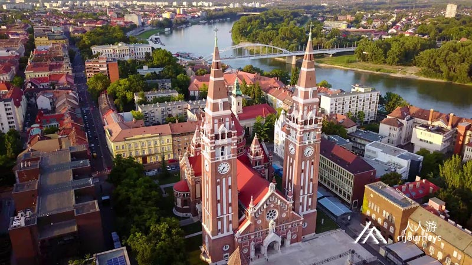
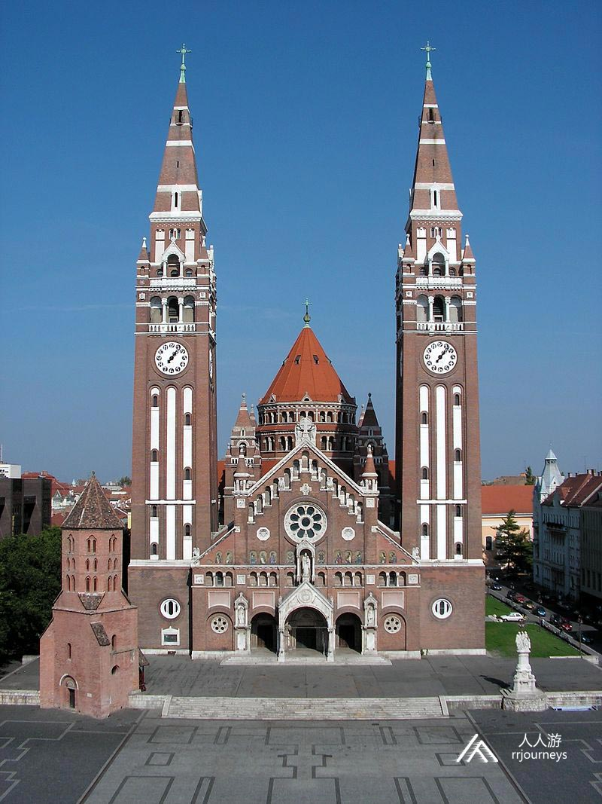
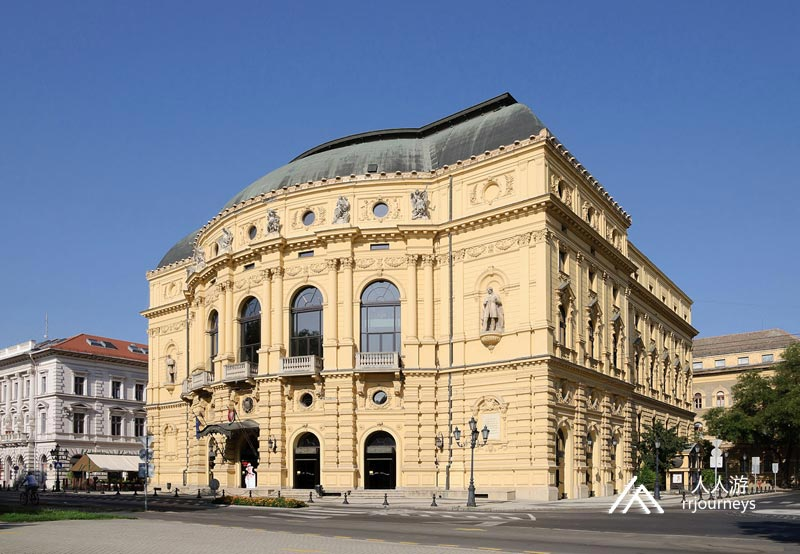
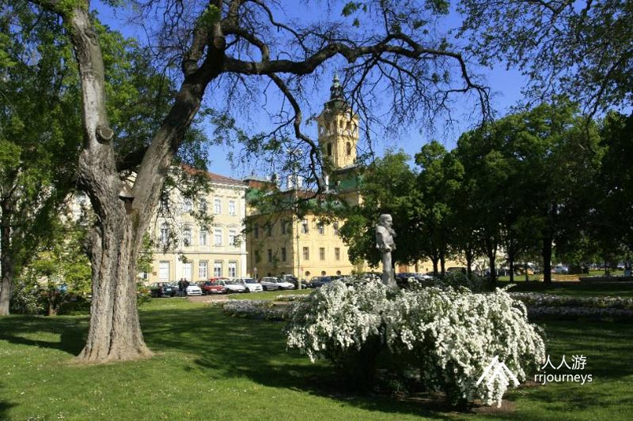
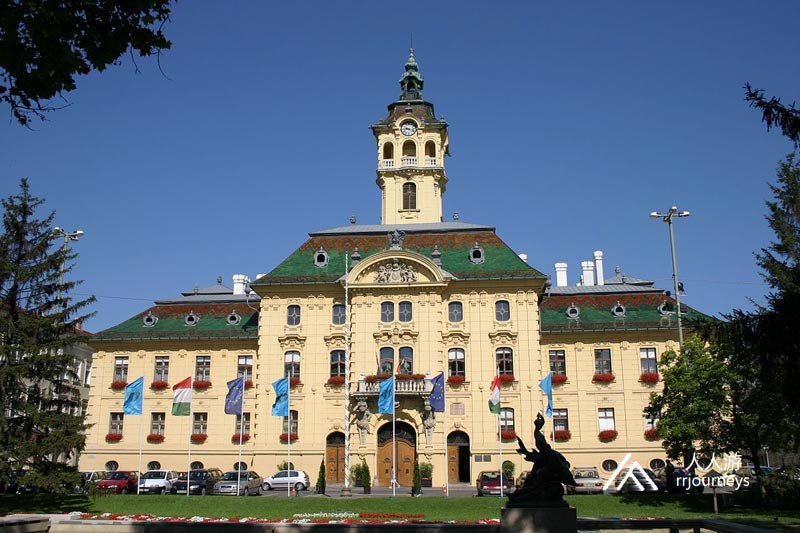
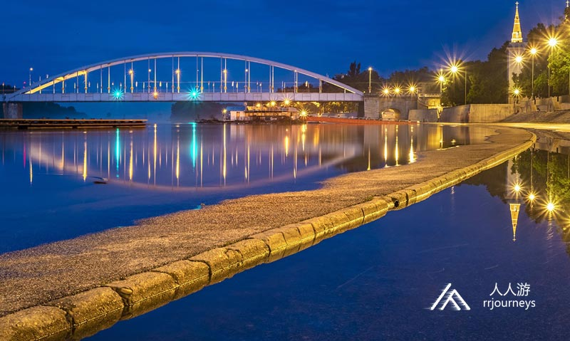
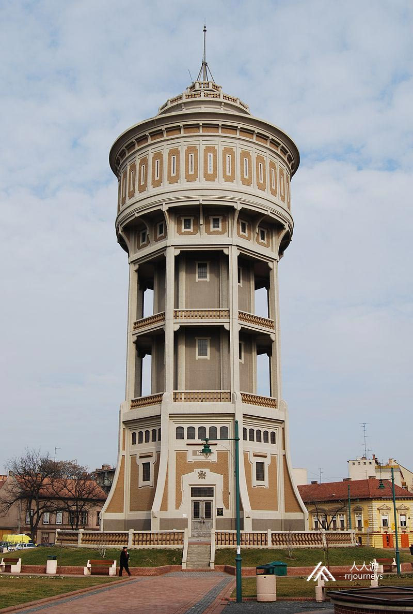
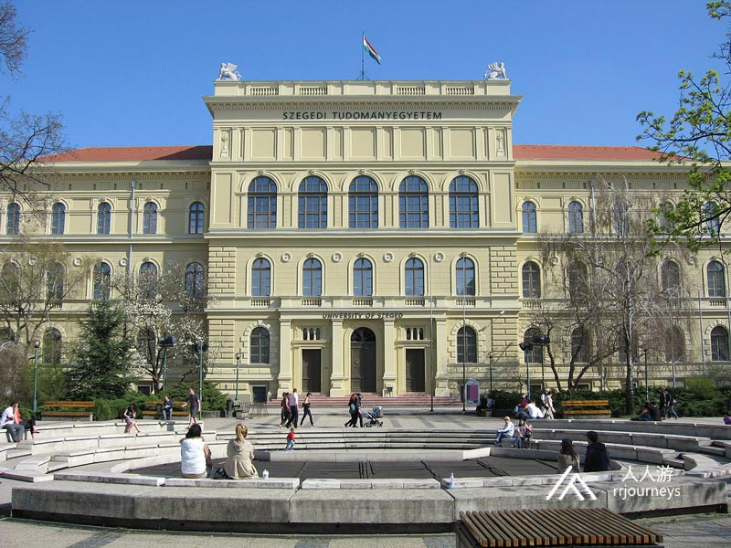
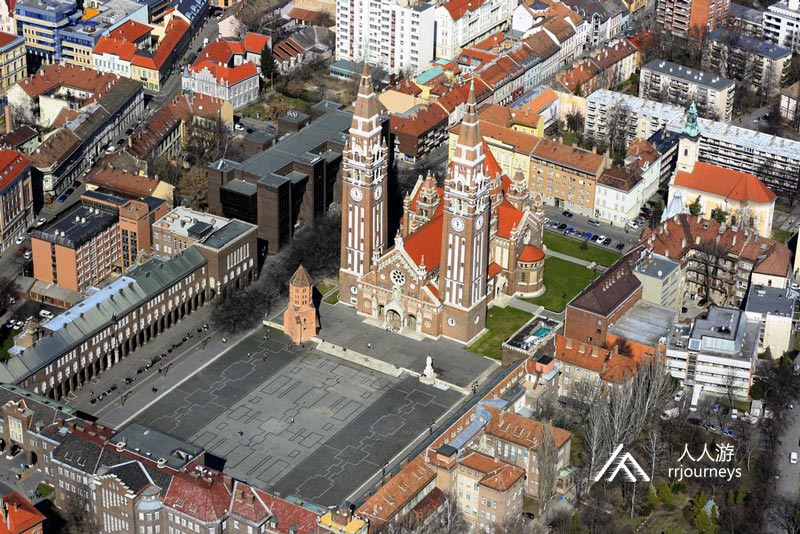

【美景】
塞格德是匈牙利第三大城市，有“阳光大学城”的美誉。在国王路易大帝统治期间，它发展成为该地区最重要的城市，在1498年，它获得了自由皇家城市的等级。
19世纪末由于洪水泛滥，全城一片狼藉。塞格德的重建得到了全欧洲的援助，城中的“罗马大道”、“莫斯科大道”、“柏林大道”等街名也由此而来。
【美食】
Goulash牛肉炖汤
Libamáj 鹅肝
Lángos特色油饼
Toltott Kaposzta 圆白菜肉丸
Halászlé 鱼汤
Ujhazi Tyukhuslevesi 家常老鸡汤
Kurtoskalacs 烟囱卷面包
Egri Bikavér埃格尔公牛血葡萄酒
塞格德 塞格德是匈牙利南部最重要的城市之一，琼格拉德州首府，是匈牙利人口第三多的第四大城市。它位于蒂萨河畔。19世纪末由于洪水泛滥，全城一片狼藉，塞格德的重建得到了全欧洲的援助，城中的“罗马大道”、“莫斯科大道”、“柏林大道”等街名也由此而来。另外，塞格德由于日照充足，著名高校较多，还有“阳光大学城”的美誉。塞格德大学是在该国最有资质的大学。塞格德户外游戏，每年吸引许多游客。 自新石器时代以来，该地区一直有人居住。在国王路易大帝统治期间，它发展成为该地区最重要的城市，在1498年，它获得了自由皇家城市的等级。1719年5月21日塞格德市收到徽章，所以这一天就定为了城市节日。  景点：圣母大教堂 塞格德圣母大教堂在主教堂塞格德-克萨纳德教区，是匈牙利最大的一个长方形教堂。它于1913年至1930年之间以新罗马式建造。大教堂是塞格德的象征，是19世纪教堂建筑中最具纪念意义的作品之一，  景点：塞格德国家剧院 塞格德国家剧院始建于1883年，一个折衷的新巴洛克风格的建筑。1879年塞格德洪水泛滥之后，家园很快被重建，人口也开始增长，全国范围的游牧表演走向剧院已是必然趋势。塞格德在已拆除城堡的遗址上，修建了新剧院。塞格德国家剧院的外部为蓝灰色，内部为红金色。剧院天花板上的壁画是古斯塔夫曼海默画的。1883年10月14日奥匈帝国皇帝弗朗茨·约瑟夫出席塞格德国家剧院的开幕式。  景点：塞切尼广场 塞切尼广场在塞格德市中心，它的面积为50,087 平方米，是步行街的直接延续，因此其步行流量非常可观，是散步的最佳选择。它经常用作庆典，节日和集市的场所。广场的现有形式是在1879年洪水泛滥之后建造起来的。  景点：市政厅 市政厅建于1728年，新巴洛克式的建筑。1804年重新由史蒂芬•韦德雷斯改建。当前的状态是洪水泛滥后建造的，2004年底市政厅的钟楼装有了Wi-Fi网络天线，该天线通过1.5兆的带宽线在广场和市政厅周围提供免费的互联网访问。  景点：蒂萨河 蒂萨河是多瑙河的最长的支流，是最重要的河流之一，并是匈牙利的第二大河流。匈牙利东部领土的很大一部分位于蒂萨河的集水区，这是匈牙利北部和大平原水文学的定义要素。蒂萨的流域面积约为157,000平方千米，其水位波动很大。  景点：水塔 水塔矗立在森特的一师万广场，建于1904年。2003年3月，它获得了独特的工业历史遗迹保护。它的建造是20世纪初期的一项巨大而勇敢的冒险。为了满足不断增长的用水需求，该市决定建立高低压水管网，其中一部分是由三个木制的自流井组成水塔。匈牙利皇家国家水利工程局公共卫生工程部指定了供水管网的路线，这为塞格德市供水的发展方向打开了新的篇章。  景点：塞格德大学 塞格德大学成立于2000年，它由约瑟夫•阿提拉大学、圣捷尔吉•阿尔伯特医科大学、食品工业教师培训学院、塞格德学院和荷麦索瓦农学院合并组成。 纳波卡耶稣会学院的历史可以追溯到1581年。但自玛丽亚•特蕾莎时代起才开始运作。1962年，该大学以阿提拉•约瑟夫的名字命名。2000年，塞格德和霍德梅斯瓦的高等教育机构合并为塞格德大学。  景点：达姆广场 达姆广场是塞格德最著名的大教堂广场 。由于多姆广场的出色声学效果，在奉献教堂前面被一排拱廊所环绕，因此可以证明是塞格德户外运动会的最合适场所。 塞格德户外游戏是1980年7月下旬欧洲最大的户外移动舞台和礼堂之一，于每年夏天在此举行。其首次演出是1931年6月13日，比赛名称为“匈牙利激情”。除了1939年至1959年这20年之外，这里户外表演就没有间断过。 塞格德大教堂和达姆广场的还原修建是两次世界大战之间最美丽的匈牙利建筑作品之一。它以U形表现了最具艺术感的匈牙利现代空间构想。国家纪念馆（万神殿）的落成是一个巨大的成功，它是20世纪初最重要的雕刻艺术的遗产。罗里希与大教堂广场是一起建造，1931年进行了翻修，并在铁门上装饰有基督教符号。小塔是罗马式哥特式风格，是最古老的建筑。 